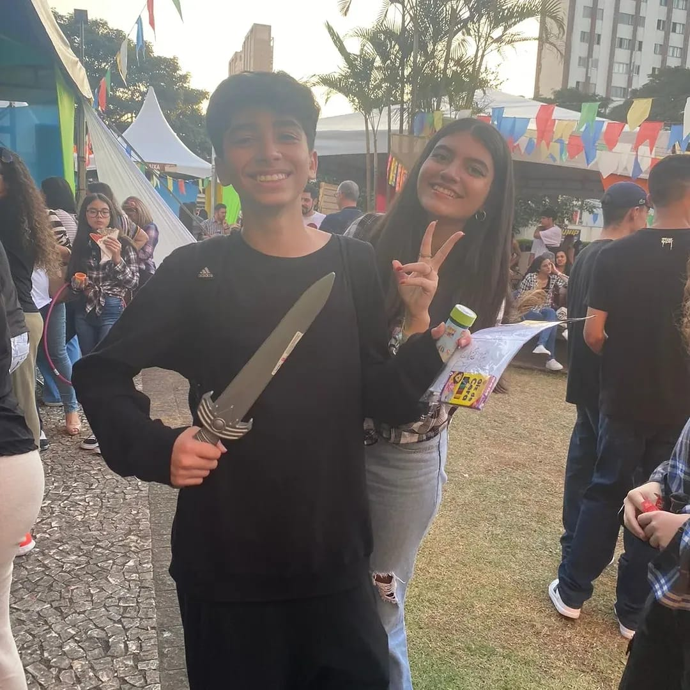
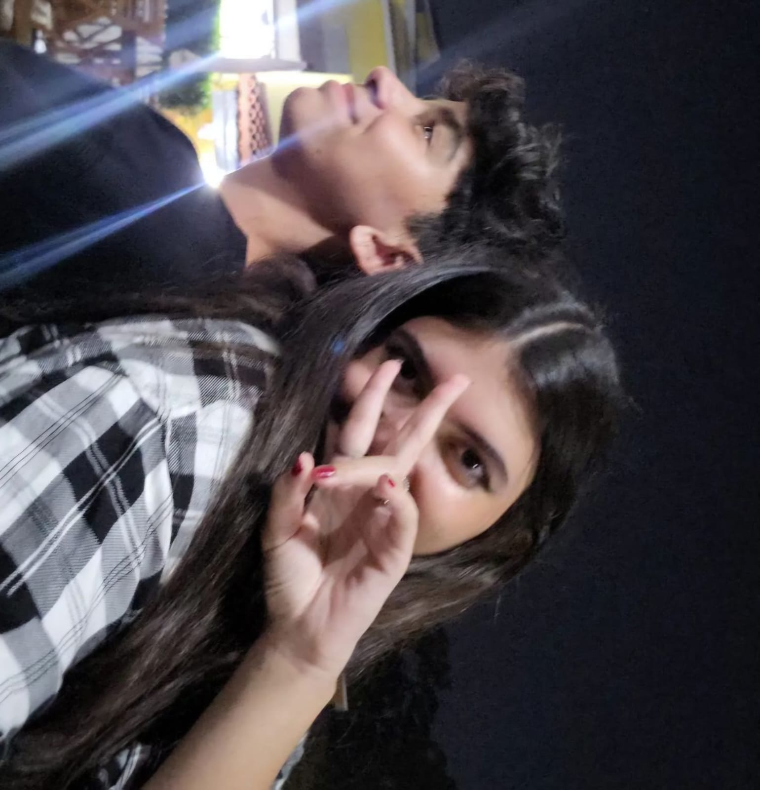
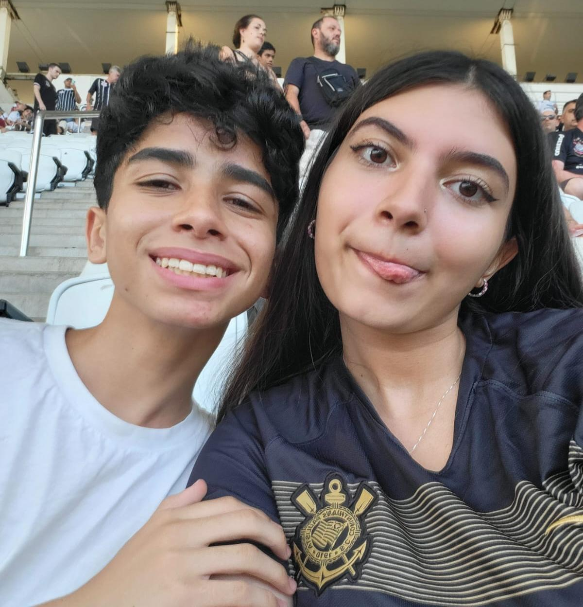

Nosso terceiro dia dos namorados juntos: Mas como isso aconteceu?
Entenda como a história de amor entre Renan Bonanno e Isabela Degaspare aconteceu.
Nossa história de amor veio de muito tempo, muito antes de você falar o que sente por mim, muito tempo antes de falar "talvez", veio de uma amizade que poucos realmente viveram algo parecido, veio de um amor natural.
Diante todo o ano de 2023 você estava presente comigo e me apoiando independente de qualquer coisa, isso me fez perceber se o que eu estava sentindo por você era maior que apenas uma amizade, a forma como tudo isso aconteceu fez ainda mais a nossa história ser tão especial.

Eu não sei o que seria todos esses anos sem a Isabela Degaspare na minha vida, graças a você minha vida teve outro sentido, um propósito do porque me esforçar. Viver namorando com você esses dois anos foi a melhor coisa que podia acontecer comigo, eu comecei a reparar nas menores coisas, e são lá que nas pequenas coisas que te fazem sorrir, que também me fazem feliz.
Mas quando o amor realmente apareceu?
O amor realmente apareceu quando eu percebi que o que eu sentia por você era algo tão forte, tão intenso, que não dava mais para negar, foi quando eu percebi que o meu coração batia mais forte só de pensar em você, foi quando eu percebi que o meu sorriso era mais largo só de ouvir a sua voz, foi quando eu percebi que o meu mundo era mais colorido só de estar perto de você.

Você já sabe, mas foi lá no aniversário da Narita (não achei foto nossa desses dias) que eu percebi isso, aqueles dias foram muito especiais para mim e não queria que acabassem. Quando acabou eu fiquei imaginando quando seria a próxima vez que nós dois juntos íamos viajar novamente. Foi lá que eu comecei a pensar todo dia em você até nos dias de hoje, foi naqueles dias que eu comecei a dar valor para quem realmente merecia, para quem eu realmente me importava.
O começo do namoro.
Do dia 12 a 11.
Para mim o nosso pedido oficial, foi no dia 12/01, foi la que eu falei talvez, foi la que "finalmente" aconteceu, foi lá que as nossas vidas mudou, aonde eu so pensava em realmente te pedir em namoro logo.
Logo depois desse dia, aconteceu nosso primeiro beijo, eu queria que ele fosse diferente, queria ter te beijado logo no dia 12, mas como você quis dificultar minha vida, minha ansiedade foi para o dia 17, eu estava muito nervoso aquele dia todo, sobre como vai ser nosso, mas quando chegou a hora, eu não consigui pensar em nada, eu não sentia medo nenhum, eu nunca tinha sentido uma sensação tão boa.

Mesmo já sabendo que sua resposta ia ser sim, eu nunca fiquei tão nervoso também, foi uma mistura de emoção que eu não sei me expressar até hoje, a unica coisa que eu sei é que eu descobri o que é amar, eu não consegui falar na hora do pedido, não consegui falar o que eu estava sentindo naquela hora.